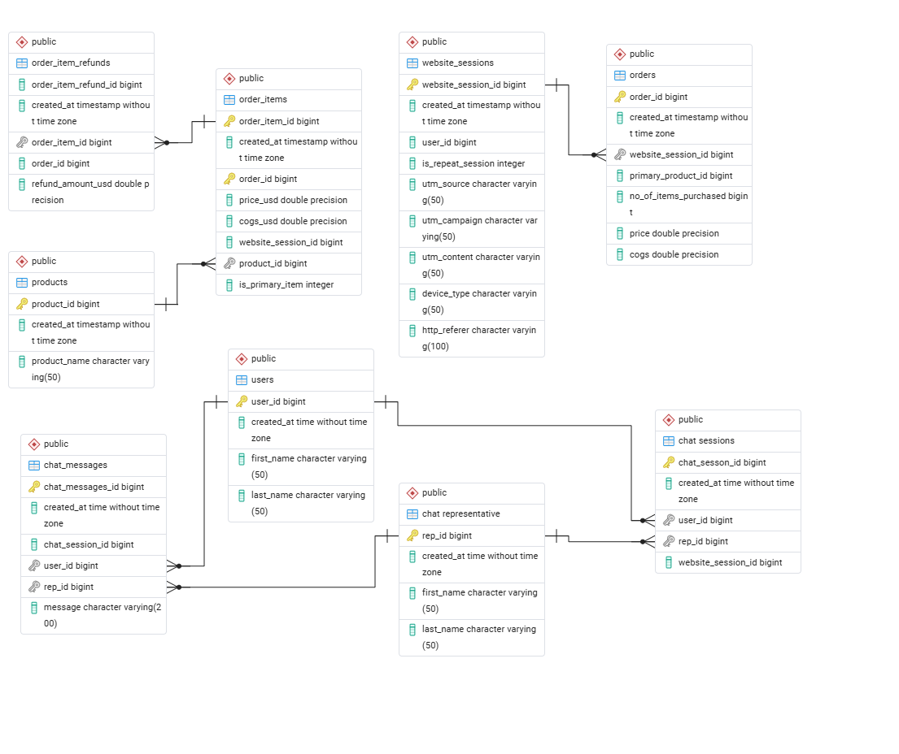

SQL Projects
Building scalable data systems, analytics pipelines, and business insights using SQL
E-Commerce Data Pipeline & Analytics System
Designed a PostgreSQL database system for an e-commerce company, including order tracking, automated aggregation, chat support, and executive-level analytics.

Read more
Business Impact
- Automated order aggregation using triggers → eliminated manual reporting
- Designed chat support system to track customer–rep interactions
- Built analytics views for monthly revenue & traffic
- Enabled dynamic reporting using stored procedures
Key Features
- Normalized relational database design
- Real-time order updates via triggers
- Stored procedures for business queries
- Monthly analytics views for reporting
- Role-based access control (views only)
Sample SQL
CREATE TRIGGER insert_new_order
AFTER INSERT ON order_items
FOR EACH ROW
EXECUTE FUNCTION update_orders_after_insert();
Funnel Analysis (SQL Case Study)
Analyzed website traffic and conversion rates across channels to identify opportunities for optimization.
Read more
- Overall Conversion Rate: 6.72%
- Analyzed traffic sources and their performance
- Evaluated revenue contribution by channel
Insight: Identified optimization opportunities in traffic acquisition funnel.
Built using the e-commerce data pipeline system.
Product & Revenue Analysis (SQL Case Study)
Performed product-level and revenue analysis to identify top performers and growth trends.
Read more
- Top Product: Mr. Fuzzy ($587K revenue)
- Average Order Value: $55.22
- Items per Order: 1.10
- Strong upward monthly revenue trend observed
Insight: Revenue heavily driven by a single hero product.
Built using the e-commerce data pipeline system.
Customer Churn Analysis
SQL-based customer churn analysis identifying at-risk customers, retention patterns, and revenue impact using window functions.
Supply Chain Optimization
Advanced SQL analysis of supply chain data including inventory turnover, supplier performance, and logistics optimization.
SQL Expertise
Specialized in complex database analysis, query optimization, and actionable business insights
Complex Analysis
Advanced joins, subqueries, and window functions for deep data insights
Performance Tuning
Query optimization and index strategies for faster execution
Data Modeling
Database design and normalization for efficient data structure
Business Intelligence
Transforming raw data into actionable business insights
Need SQL Solutions?
Looking for database analysis, query optimization, or data modeling expertise? Let's discuss your project.
Get in Touch